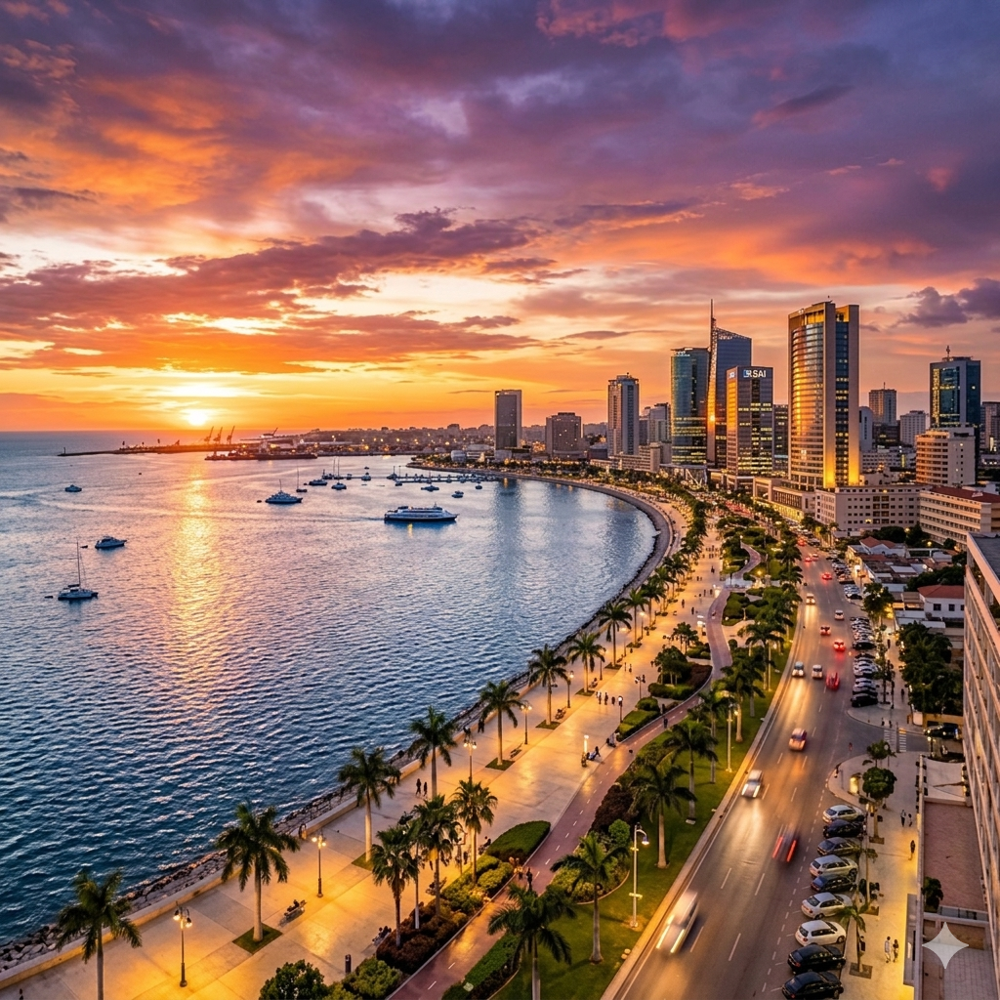
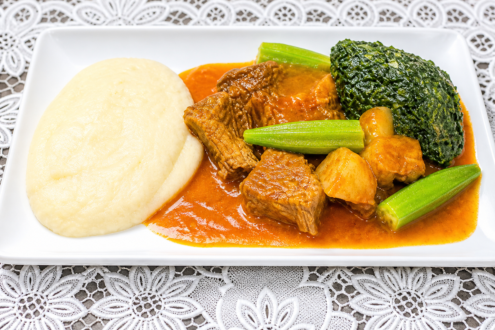
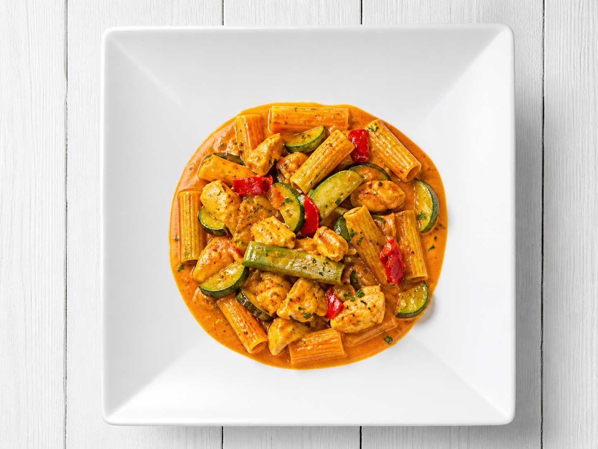
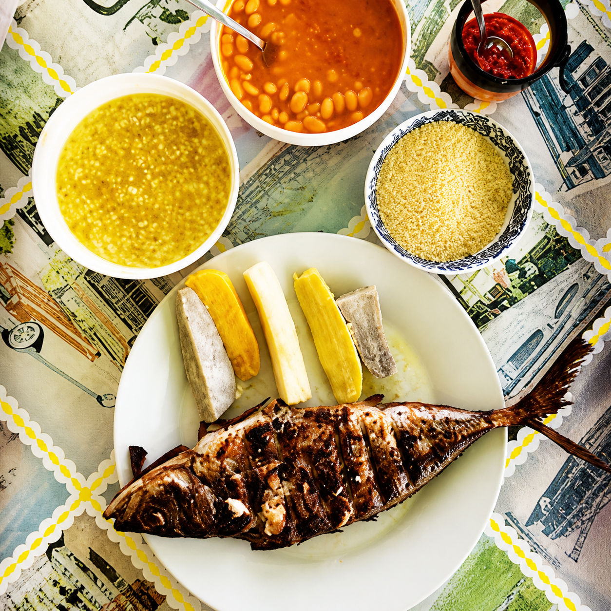
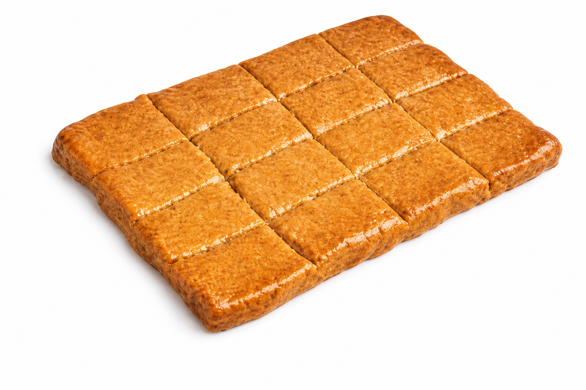
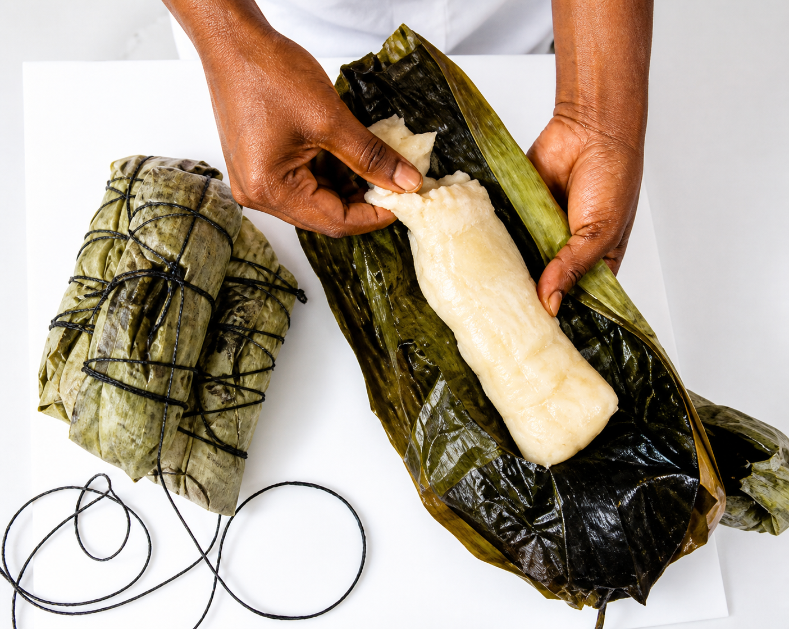
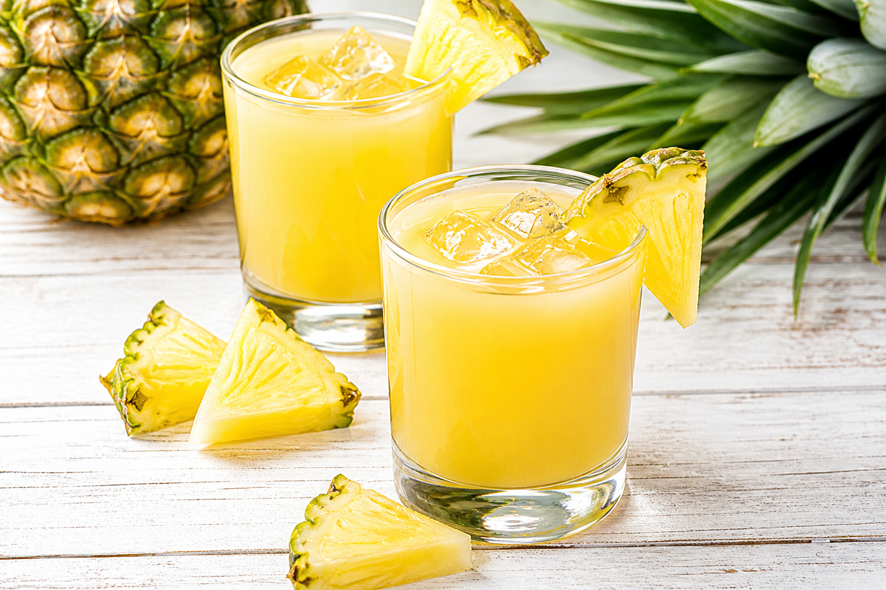

Malanje
1.2k
Chutes de Kalandula
Province de Malanje, Angola

RetournerL'Angola, situé sur la côte atlantique de l'Afrique australe, est un pays en pleine renaissance. Au-delà de ses ressources naturelles, il offre des paysages époustouflants allant du désert du Namib aux forêts tropicales, en passant par des savanes riches en faune. Luanda, sa capitale vibrante, mêle modernité et héritage colonial portugais.
Province de Malanje, Angola

Province de Luanda, Angola

Province de Luanda, Angola

Centre-ville de Luanda, Angola

Province de Huíla (Lubango), Angola

Province de Luanda, Angola

Praia Morena, Benguela

La "Baie Bleue", Benguela

Province de Namibe, Angola

Paradis des surfeurs, Luanda

Pungo Andongo, Malanje

Route spectaculaire, Huíla

Banc de sable et port, Benguela

Ancienne capitale, Province de Zaire

Statue panoramique, Huíla
Une terre de royaumes anciens et de rythmes modernes.
L'Angola possède une identité forgée par de puissants royaumes ancestraux et une fusion culturelle unique née de siècles d'échanges atlantiques. C'est un pays où la tradition orale et les rythmes urbains se côtoient harmonieusement.
L'héritage des royaumes de Kongo et Ndongo, portés par des figures comme la Reine Nzinga, est le socle de la fierté nationale.
L'architecture luso-africaine de Luanda et Benguela témoigne d'un passé colonial complexe et d'un métissage culturel riche.
Berceau de rythmes mondiaux, l'Angola fait danser le monde avec ses mélodies envoûtantes et ses danses sociales chaleureuses.
Les masques "Mwana Pwo" et les sculptures sur bois témoignent du raffinement artistique des peuples de l'Est angolais.

Découvrez les trésors de l'artisanat angolais. Des créations authentiques façonnées par nos maîtres artisans (Sculptures, masques, vannerie traditionnelle).
 En stock
En stock
Sculpture emblématique en bois précieux, symbole de la culture et de la sagesse angolaise.
 En stock
En stock
Magnifique masque rituel de l'ethnie Chokwe, représentant la beauté féminine ancestrale.
 En stock
En stock
Paniers tressés à la main avec des fibres naturelles et des teintures organiques.
 En stock
En stock
Tissu traditionnel aux motifs géométriques vibrants, symbole de l'identité angolaise.
 Pièce Unique
Pièce Unique
Le kissange (piano à pouces) est un instrument de musique traditionnel emblématique, sculpté à la main dans du bois précieux.
 En stock
En stock
Paniers de décoration aux motifs complexes, issus du savoir-faire des femmes Mumuila.

Luanda, Centre-ville

Luanda, Marginal

Luanda, Quartier Talatona

Luanda, Baía de Luanda

Lubango, Nature sauvage

Luanda, Quartier Miramar
La gastronomie angolaise est une fusion savoureuse de traditions africaines et d'influences portugaises. Elle se distingue par l'utilisation généreuse de l'huile de palme, du manioc et des produits frais de l'Atlantique.

Le plat national : un ragoût de poulet onctueux à l'huile de palme, gombo et ail.

L'accompagnement essentiel à base de farine de manioc ou de maïs, à la texture fondante.

Un plat traditionnel de poisson séché ou de viande, mijoté avec des feuilles de patate douce.

Poisson grillé servi avec des haricots à l'huile de palme, patate douce et banane plantain.

Une pâte de cacahuètes grillées et pimentées, souvent servie comme en-cas savoureux.

Un dessert onctueux à base de noix de coco et de jaunes d'œufs, héritage portugais.

Pain de manioc fermenté et cuit à la vapeur dans des feuilles de bananier, très nutritif.

Calmars sautés accompagnés de farine de manioc grillée et d'épices locales.

Haricots mijotés lentement dans de l'huile de palme rouge, un pilier de la cuisine familiale.

Gambas fraîches cuisinées dans un curry riche et onctueux, spécialité des zones côtières.

Boisson traditionnelle rafraîchissante à base de farine de maïs ou de pelures d'ananas.

Friandise traditionnelle à base de cacahuètes et de sucre roux, croquante et délicieuse.
L'Angola vibre au rythme de nombreuses célébrations culturelles et musicales tout au long de l'année :
Le plus grand événement culturel. Des défilés au rythme du Semba sur la Marginal de Luanda.
Un rendez-vous international qui réunit des virtuoses du monde entier dans une ambiance festive.
Le plus grand rassemblement religieux d'Afrique subsaharienne, célébré chaque année en septembre.
L'Angola possède un climat tropical avec deux saisons bien marquées. Pour planifier votre voyage idéal :
De mai à septembre. C'est la période idéale pour visiter tout le pays. Les températures sont plus fraîches et agréables (20-25°C), le ciel est clair et il n'y a quasiment pas de pluie. C'est aussi le meilleur moment pour l'observation de la faune.
De octobre à avril. Le climat est plus chaud et humide. Les paysages deviennent d'un vert éclatant, particulièrement impressionnant aux chutes de Kalandula. Note : Certaines routes secondaires peuvent devenir difficiles d'accès durant les pics de précipitations.
Voyager en Angola est une aventure gratifiante qui nécessite une préparation adéquate pour en profiter en toute sérénité :
Exemption de visa pour de nombreuses nationalités (jusqu'à 30 jours). Passeport valide 6 mois minimum. Carnet de vaccination requis.
Prudence recommandée à Luanda contre les vols à la tire. Évitez les déplacements nocturnes hors des zones sécurisées.
Vaccin Fièvre Jaune obligatoire. Traitement antipaludéen fortement conseillé. Ne consommez que de l'eau en bouteille scellée.
Le portugais est indispensable pour communiquer. Demandez toujours l'autorisation avant de photographier des personnes.
Explorez l'Angola avec nos guides certifiés, experts de la nature sauvage et de l'histoire des anciens royaumes.
Spécialiste Nature & Désert
João connaît le désert du Namibe comme sa poche. Il vous fera découvrir les secrets des Welwitschia Mirabilis et les recoins cachés des chutes de Kalandula.
Historienne - Luanda & Benguela
Passionnée par l'histoire coloniale et les royaumes Kongo, Maria transforme chaque promenade dans Luanda en une épopée historique fascinante.
Expert Balnéaire & Architecture
António est un amoureux de la côte angolaise. Spécialiste de Benguela et Lobito, il vous fera découvrir les joyaux Art Déco et les plages secrètes de Baía Azul.